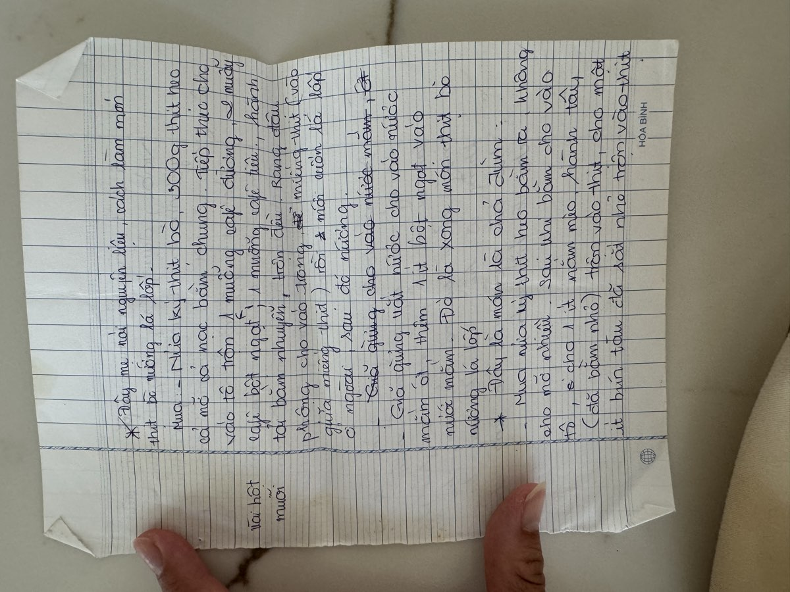
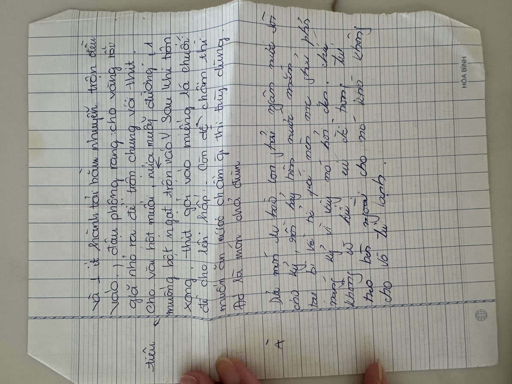

← Back to recipes

Thịt Bò Xào Thái
Thai-Style Stir-Fried Beef
From Mẹ — Oanh
Nguyên liệu · Ingredients
- 500g beef (flank or sirloin), thinly sliced against the grain
- 2 cloves garlic, minced
- ¼ onion, sliced into wedges
- 3 stalks green onion (hành lá), cut into 2-inch pieces
- 150g mushrooms, sliced
- 200g baby corn, halved lengthwise
- ½ cup roasted cashews
- 2 tablespoons soy sauce
- 1 tablespoon sugar
- 1 tablespoon fish sauce (nước mắm)
- 1 tablespoon oyster sauce
- 2 tablespoons cooking oil
- 1 teaspoon black pepper
- 1 teaspoon cornstarch (for marinade)
Cách làm · Instructions
- Marinate the beef: toss sliced beef with 1 tablespoon soy sauce, cornstarch, a pinch of sugar, and black pepper. Let it sit for at least 15 minutes.
- Get everything ready before you start cooking — once the wok is hot, it all goes fast. Have your garlic, onions, mushrooms, corn, and sauces measured and within reach.
- Heat the wok until it's smoking hot. Add oil, then sear the beef in a single layer — don't crowd it. Cook for just 1–2 minutes until browned but still pink inside. Remove and set aside.
- In the same wok, add a little more oil. Stir-fry garlic until fragrant, about 30 seconds. Add onion wedges and cook until they just start to soften.
- Add mushrooms and baby corn. Toss on high heat for 2 minutes. The wok should be sizzling the whole time.
- Return the beef to the wok. Add soy sauce, fish sauce, oyster sauce, and sugar. Toss everything together for 1 minute — just enough to coat and combine.
- Toss in the cashews and green onions at the very end. Give it one final toss and serve immediately over steamed jasmine rice.
Công thức gốc · Original handwritten recipe


❦
A recipe from Mẹ's kitchen